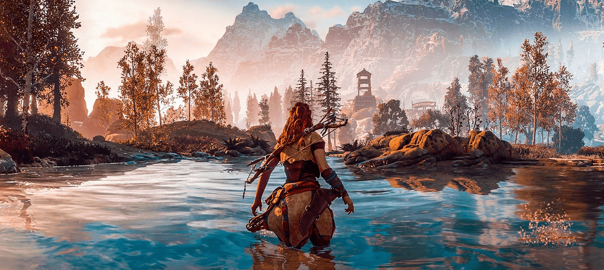
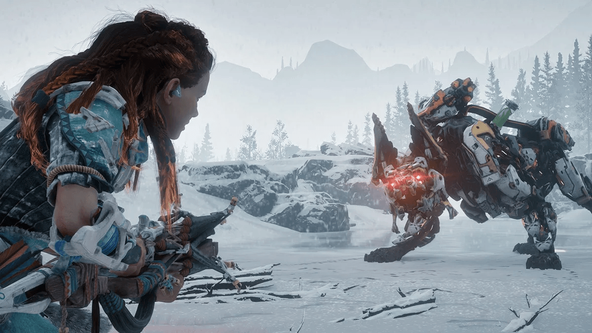

Обзоры
The Last of Us Part II

The Last of Us Part II была анонсирована в конце 2016, но без конкретной даты релиза. Нил Дракман, тогда еще творческий директор Naughty Dog, решил что с таким подходом он избежит разочарования у игроков.
Подробнее
God of War: Ragnarök
God of War: Ragnarök на все сомнительные изменения вызвала у меня чувство схожее с просмотром хорошего фильма или прочтения хорошей книги, она дарит чувство целой и хорошо прописанной истории. Это чувство от видеоигры, я не испытывал уже давно. Именно ради подобных эмоций и стоит играть в видеоигры.
Подробнее
Безусловно, старые части серии есть за что любить, но многие вещи и болячки, за которые ругают перезапуск, присутствуют и в старых, и новых. То, что мы имеем в итоге, ни в коем случае не является плохой производной от былой серии, а удачным развитием старых идей в новой оболочке.
Однако я могу понять и тех, кому более приземленная и личная модель повествования может понравиться меньше, и они по прежнему будут любить старые игры серии за их манию к гигантизму и повышенному градусу безумия на экране.
Days Gone

Это отличная история. Прям вот хорошая и крепкая, неплохо передающая множество ярких аспектов, как наводящих на размышления, так и вызывающих эмоции, а порой и желание сесть на байк и катиться дальше, чтобы увидеть, что же там ждет за поворотом. Это довольно сложно описать без спойлеров, — а еще так, чтобы очистить от личных субъективных эмоций, — но я попробую.
Подробнее
С одной стороны, она иногда кажется немного банальной и притянутой за уши, а с другой, — вся наша жизнь это как раз по сути набор клишированных решений, как ты там не изворачивайся. Но сюжет неплохо так накручен ответвлениями и событийными событиями разных мастей. Плюс, наконец-то, мы не ищем многострадальную вакцину, а пытаемся выжить и обрести смысл жизни в том звездеце, в котором оказались. Конечно же всё началось с вируса, который сметал всё на своем пути, люди рвали друг друга на части и вот это всё. Но это осталось за кадром и в воспоминаниях.
Death Stranding

В недалёком будущем планета содрогнулась от беспрецедентного катаклизма — «Выхода смерти» (да, так у нас перевели термин death stranding). Загробный мир начал просачиваться в мир реальный, а вместе с ним пришли Твари, способные обращать в кратеры целые города, и темпоральный дождь, который старит всё, чего касается. От США остались лишь руины, а разрозненные кучки людей ютятся по подземным убежищам и вообще не выбираются наружу. Нужды этих людей обслуживает корпорация «Бриджес»: она доставляет в убежища медикаменты, еду и другие жизненно важные припасы. А мы играем за Сэма — одного из лучших курьеров «Бриджес» и, по совместительству, приёмного сына Бриджет Стрэнд, президента Соединённых городов Америки — нового государства, призванного объединить выживших.
Подробнее
Вселенная игры прописана хорошо, так что поначалу в глаза бросается лишь одна сценарная проблема — темп повествования. Люди, мало знакомые с творчеством Кодзимы, обычно упрекают его за то, что «кина» слишком много: пять минут геймплея, десять минут катсцен. С Death Stranding же ситуация прямо противоположная — «кина» неприлично мало. И речь не только о роликах с голливудскими звёздами, но и о сюжете в принципе. Он подаётся обрывками, причём настолько куцыми, что вникнуть в ситуацию Сэма и понять его мотивы почти невозможно. Странно, что игра «о человеческих связях» не даёт толком привязаться к собственно людям: мы слишком редко видим их на экране и почти не общаемся с ними. А оттого моменты, задуманные Кодзимой как драматичные, попросту не работают.
Horizon Zero Dawn
Мир Horizon Zero Dawn представляет собой довольно занимательный винегрет, части которого гармонично дополняют друг друга. На первый взгляд, сеттинг игры — это какая-то чушь. Охотники бегают с луками и копьями за бронированными роботами, которые отвечают им залпами лазеров. Как при таких условиях возможна победа над машиной – непонятно. Фильм «Терминатор» наглядно показывает, как робот, созданный для убийства, доминирует над человеком, при этом не будучи саблезубым тигром с лазерной пушкой на спине. К чести создателей игры надо отметить, что за исключением общих моментов, необходимых для геймплея, сюжет игры прописан весьма логично. По ходу повествования нам доходчиво объяснят, как же так получилось, что земля превратилась в железный зоопарк с шаманами и лазерами.
Подробнее
Сам игровой мир, где нам предстоит путешествовать, поражает своими размерами. Впервые взглянув на карту и увидев вокруг открытой зоны огромное серое пятно, я решил, что это просто оформление, как рамка, но не тут-то было. Вся эта огромная площадь действительно является игровым пространством, которое можно исследовать. Структура этого мира представляет собой классическое деление на биомы: пустыня, умеренный, мерзлый и оледенелый. Признаюсь честно, я не сторонник таких делений, потому что эта игровая условность плохо сочетается не только с реализмом, но и с практической логикой. Иными словами герой, который шарится по сугробам в бронелифчике и шортах без каких-либо признаков дискомфорта, не способствует принятию мира.